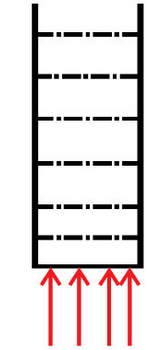
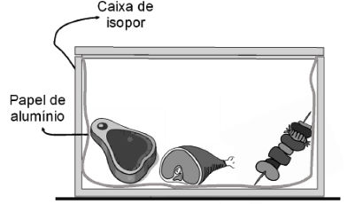
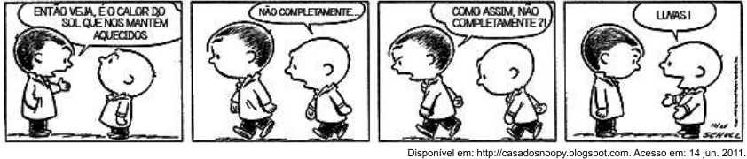
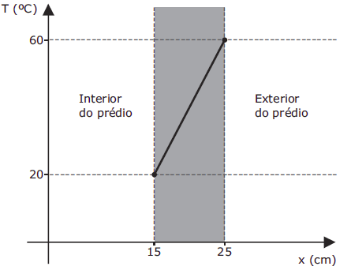
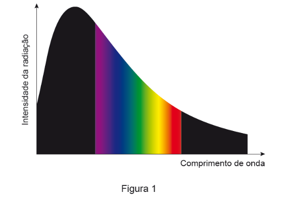
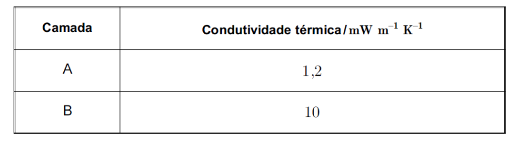
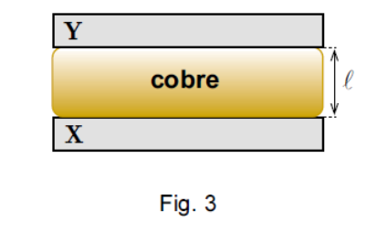

a) Os processos de propagação de calor por condução e convecção ocorrem em todos os tipos de meios.
b) O processo de irradiação de calor ocorre somente no vácuo.
c) A convecção é o processo de propagação de calor que proporciona o efeito das brisas marítimas.
d) A condução térmica ocorre somente em líquidos.
e) A irradiação é um processo de transferência de calor que ocorre por meio de ondas eletromagnéticas pertencentes ao espectro visível.
O aluno que responder corretamente ao questionamento do professor dirá que o derretimento ocorrerá
a) mais rapidamente na bandeja de alumínio, pois ela tem uma maior condutividade térmica que a de plástico.
b) mais rapidamente na bandeja de plástico, pois ela tem inicialmente uma temperatura mais alta que a de alumínio.
c) mais rapidamente na bandeja de plástico, pois ela tem uma maior capacidade térmica que a de alumínio.
d) mais rapidamente na bandeja de alumínio, pois ela tem um calor específico menor que a de plástico.
e) com a mesma rapidez nas duas bandejas, pois apresentarão a mesma variação de temperatura.
I - O calor do Sol chega até nós por _____________.
II - Uma moeda bem polida fica ____________ quente do que uma moeda revestida de tinta preta, quando ambas são expostas ao sol.
III - Numa barra metálica aquecida numa extremidade, a propagação do calor se dá para a outra extremidade por ___________.
|
a) radiação - menos - convecção. b) convecção - mais - radiação. c) radiação - menos - condução. |
d) convecção - mais - condução. e) condução - mais – radiação. |
|
a) ser uma fonte de calor. b) ser um bom absorvente de calor. c) ser um bom condutor de calor. |
d) impedir que o calor do corpo se propague para o meio exterior. e) Nenhuma das alternativas. |
I – A transferência de calor de um corpo para outro ocorre em virtude da diferença de temperatura entre eles;
II – A convecção térmica é um processo de propagação de calor que ocorre apenas nos sólidos;
III – O processo de propagação de calor por irradiação não precisa de um meio material para ocorrer.
Estão corretas:
|
a) Apenas I. b) Apenas I e II. |
c) I, II e III. d) Apenas I e II. |
e) Apenas II e III. |
a) a convecção é observada em líquidos e gases.
b) a condução de calor pode ocorrer em meios materiais e no vácuo.
c) o processo de propagação de calor por irradiação pode ocorrer sem a existência de meio material;
d) o calor é uma forma de energia que pode se transferir de um corpo para outro em virtude da diferença de temperatura entre eles.
e) O processo de convecção térmica consiste na movimentação de partes do fluido dentro do próprio fluido em razão da diferença de densidade entre as partes do fluido.
A transmissão do calor por meio das moléculas da água durante seu aquecimento ocorre apenas por

|
a) condução. b) convecção. |
c) irradiação. d) condução e convecção. |
e) convecção e irradiação. |
No contexto científico, é correto o significado de “calor” usado nessas expressões?
a) Sim, pois o calor de um corpo depende de sua temperatura.
b) Sim, pois calor é sinônimo de alta temperatura.
c) Não, pois calor é energia térmica em trânsito.
d) Não, pois calor é a quantidade de energia térmica contida em um corpo.
e) Não, pois o calor é diretamente proporcional à temperatura, mas são conceitos diferentes.

Considerando o exposto, assinale a alternativa correta que completa as lacunas das frases a seguir. A caixa de isopor funciona como recipiente adiabático. O isopor tenta ______ a troca de calor com o meio por ________ e o alumínio tenta impedir _________.
|
a) impedir - convecção - irradiação do calor b) facilitar - condução - convecção |
c) impedir - condução - irradiação do calor d) facilitar - convecção - condução |

Quais são os processos de propagação de calor relacionados à fala de cada personagem?
|
a) Convecção e condução. b) Convecção e irradiação. |
c) Condução e convecção. d) Irradiação e convecção. |
e) Irradiação e condução. |

Qual é o valor, em W/m2, do módulo do fluxo de calor por unidade de área que atravessa a parede?
|
a) 125. b) 800. |
c) 1200. d) 2400. |
e) 3000. |
I. As prateleiras de uma geladeira doméstica são grades vazadas, para facilitar fluxo de energia térmica até o congelador por […]
II. O único processo de troca de calor que pode ocorrer no vácuo é por […].
II. Em uma garrafa térmica, é mantido vácuo entre as paredes duplas de vidro para evitar que o calor saia ou entre por [….].
Na ordem, os processos de troca de calor utilizados para preencher as lacunas corretamente são:
|
a) Condução, convecção e radiação. b) Condução, radiação e convecção. |
c) Convecção, condução e radiação. d) Convecção, radiação e condução. |
O espectro da radiação térmica emitida por um corpo é um espectro contínuo em que o comprimento de onda da radiação de máxima intensidade emitida depende da temperatura a que o corpo se encontra: à medida que a temperatura, T, do corpo aumenta, o comprimento de onda ao qual ocorre a emissão de radiação de máxima intensidade, λ máxima , diminui proporcionalmente.
A taxa temporal de emissão de energia de um corpo, sob a forma de radiação térmica, a partir da sua superfície, é proporcional à quarta potência da temperatura absoluta da superfície do corpo, dependendo também da sua área superficial e de uma constante chamada emissividade.
Ao mesmo tempo que emite, um corpo também absorve radiação eletromagnética da sua vizinhança.
Quando um corpo está em equilíbrio com a sua vizinhança, emite e absorve energia, como radiação, à mesma taxa temporal.
R. A. Serway, J. W. Jewett, Jr., Princípios de Física, vol. II, Pioneira Thomson Learning, 2004 (adaptado)
13.1. A Figura 1 apresenta uma parte do gráfico da intensidade da radiação emitida por um corpo, a uma determinada temperatura, em função do comprimento de onda.

À temperatura considerada, o corpo emite
(A) apenas radiação visível.
(B) radiação de máxima intensidade no visível.
(C) apenas radiação ultravioleta.
(D) radiação de máxima intensidade no ultravioleta.
13.2. Traduza por uma expressão matemática a lei enunciada no final do segundo parágrafo do texto.
13.3. Qual é a unidade do Sistema Internacional em que se exprime a taxa temporal de emissão de energia de um corpo?
13.4. Se a temperatura absoluta da superfície de um corpo aumentar duas vezes, a taxa temporal de emissão de energia do corpo, sob a forma de radiação térmica, a partir da sua superfície, aumentará
(A) duas vezes.
(B) quatro vezes.
(C) oito vezes.
(D) dezasseis vezes.
13.5. A Terra emite e absorve radiação a uma taxa temporal __________, pelo que a temperatura média da sua superfície __________.
(A) igual ... varia
(B) diferente ... varia
(C) igual ... não varia
(D) diferente ... não varia
Esses valores encontram-se registados na tabela seguinte.

Comparando porções das camadas A e B, de igual área e submetidas à mesma diferença de temperatura, mas, sendo a espessura da camada B dupla da espessura da camada A, é de prever que a taxa temporal de transmissão de energia como calor seja cerca de...
(A) 2 vezes superior na camada B.
(B) 4 vezes superior na camada B.
(C) 8 vezes superior na camada B.
(D) 16 vezes superior na camada B.

15.1. Identifique o mecanismo de transferência de energia como calor entre as placas X e Y, através da placa de cobre.
15.2. Identifique a propriedade física que permite distinguir bons e maus condutores de calor.
15.3. Selecione a única alternativa que permite obter uma afirmação correta.
Se a placa de cobre for substituída por outra, idêntica, mas com metade da espessura, a energia transferida por unidade de tempo, entre as placas X e Y,
(A) reduz-se a 1/2.
(B) quadruplica.
(C) duplica.
(D) Reduz-se a 1/4.
15.4. Selecione a única alternativa que contém os termos que preenchem, sequencialmente, os espaços seguintes, de modo a obter uma afirmação correta.
A placa X encontra-se a uma temperatura _____ à temperatura da placa Y, sendo o comprimento de onda da radiação mais intensa emitida pela placa X _____ do que o comprimento de onda da radiação mais intensa emitida pela placa Y.
(A) superior ... maior
(B) inferior ... menor
(C) superior ... menor
(D) inferior ... maior